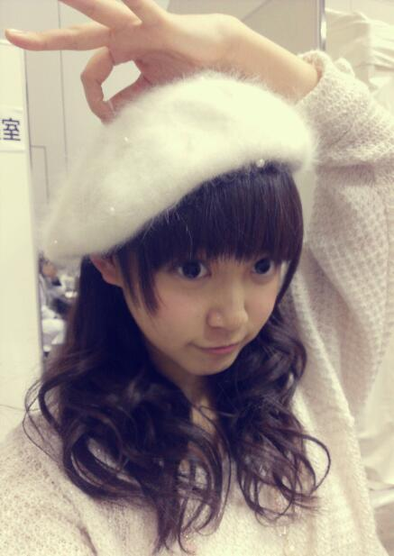
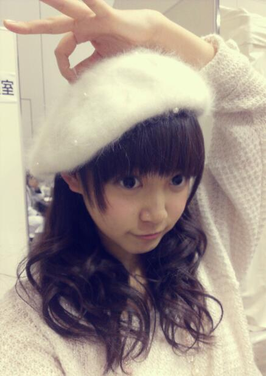
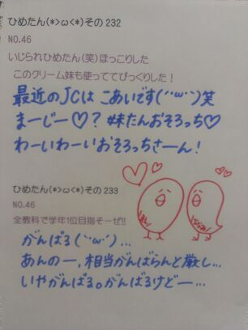

| 2013/02 05 Tue | ひめたん(*>ω<*)そ の259 |
鶏つくねを作ってみた。
固まらなかった。
...。
つくねは固まってるからつくねなの。
それはつくねじゃなくてそぼろなの。
まずー料理できないのに
なんでそんな難しいもの作ったのー？
って感じで
語尾に(にや)ってついてたかもだけど
ままに散々に言われましたが
だがしかーしっ！
レシピが簡単だからこそ
つくねをセレクトしたんですー(´・ω・｀)ぶーぶー
写真はちょーっと載せらんないかなー
ごめんねー
また綺麗にできたら載せるからねー
ひめたんがやたらベレー帽写るように
頑張った感じの写めなら載せるから
それで許してねーふはははは(｀・ω・´)

おとといはある撮影をしてきました！
外観というかなんというか
雰囲気が可愛くて楽しかったった(*^^*)
完成が楽しみですー♪
初挑戦のことだからねー
上手く行くかなどうかなーてのは
ちょっとあったけど
今は形になるのが楽しみです＼(^^)／
昨日はレコーディングー♪ .
固まらなかった。
...。
つくねは固まってるからつくねなの。
それはつくねじゃなくてそぼろなの。
まずー料理できないのに
なんでそんな難しいもの作ったのー？
って感じで
語尾に(にや)ってついてたかもだけど
ままに散々に言われましたが
だがしかーしっ！
レシピが簡単だからこそ
つくねをセレクトしたんですー(´・ω・｀)ぶーぶー
写真はちょーっと載せらんないかなー
ごめんねー
また綺麗にできたら載せるからねー
ひめたんがやたらベレー帽写るように
頑張った感じの写めなら載せるから
それで許してねーふはははは(｀・ω・´)

おとといはある撮影をしてきました！
外観というかなんというか
雰囲気が可愛くて楽しかったった(*^^*)
完成が楽しみですー♪
初挑戦のことだからねー
上手く行くかなどうかなーてのは
ちょっとあったけど
今は形になるのが楽しみです＼(^^)／
昨日はレコーディングー♪ .

 ひめたんビームの射程距離は!?
ひめたんビームの射程距離は!?
ひめたんビーム うってください(^q^)
「個握で話してる時の距離が限界」
ってことになってるんですよー。
(<・ω・>)びーむ
ひめたんビームに継ぐ私考案の ひめたんシュワッチ...w
握手した時に提案したけど 使ってくれてる(*^^*)!?w
ひめたんしゅわっち...
あの、もちろん覚えてるんだけどね、
いつか使おうかなとも思ってなくはないんだけど、いつ使おうかね。
(`・ω・)」しゅ、しゅわっち！
ひめたんビームと宇宙刑事ギャバンの、レーザーＺビーム、どちらが強いんでしょうか？
その宇宙なんちゃらを知らんので
こういうこと言っていいんかわからんけど
ひめたんびーむは強いよー？
無敵とまでは言わんけど
そこそこ強いとひめたんは思うけどねー
以前、美雲さんに質問したら、「ひめたんビームしかー」と答えてくださいました。 いかがでしょう？
さすが みくもってぃ (安藤美雲chan)(^^)
あんちゃんまんしかー！
姪（1歳）がひめたんビームをやると喜ぶので、
ひめたんビーム貰っちゃっていいですか？(゜o゜;
・・・じゃなくてσ(^_^;
ひめたんビーム勝手に使っちゃっていいですか？
貰っちゃったらひめたんの武器がなくなるのでちょっとあれだけどね笑
著作権とかないかは勝手に使うのは問題ないかと。
そして姪っこちゃんかーわーいーいー♪
姪っこちゃーん∩^ω^∩！
今度京都個握で初めてひめたんとこ行きます(照)
んーやっぱり ひめたんビームして欲しい!
ひめたんビームを至近距離で撃たれたらどーなっちゃう??
きゅんってなってくれたら成功かな///
ひめたんに気を遣って←
「どぎゃーん」ってなってくださる方もいれば
見事に跳ね返してくださる方もおりますねー
百聞は一見にしかずってことで一度くらってみてください＼(^^)／
ひめたんビーム！！とさゆりんごパンチ！！
対決したらどっちが強いのですか？
これは...うーん...
ひめたんびーむは確かに強いとゆったけれども、
さゆりんごぱんちはなかなか強いからなー
そして さゆりん (松村沙友理chan)はぱんち以外にもいろんな技を持ってるからねー
彼女は13歳だからねー(ω)

(＊´・ω・＊)ひめたん
コメント(211)
2013/02/05 20:06